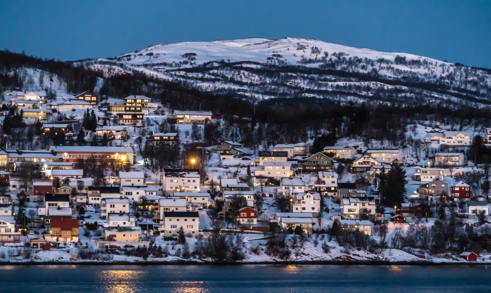
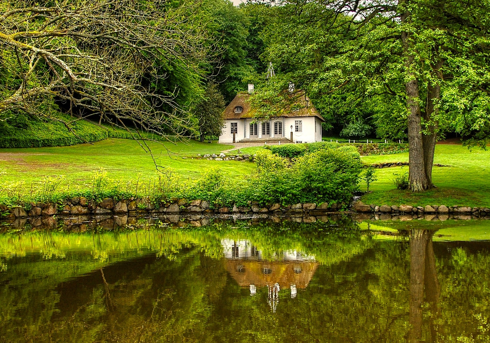
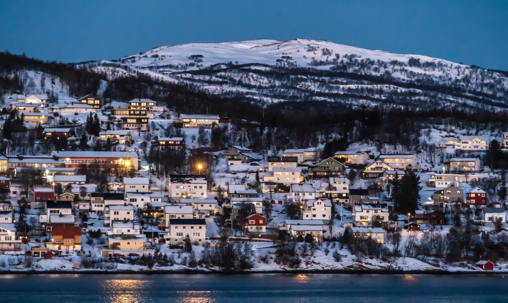
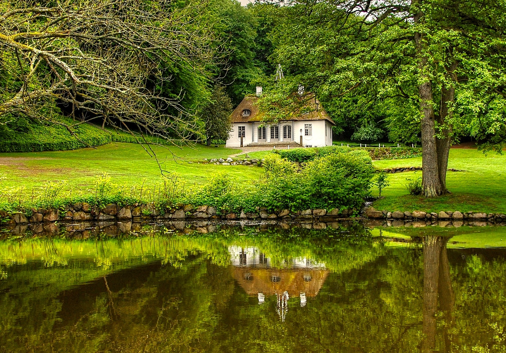

{kind=link}
 



Europa del norte es la región septentrional de Europa que colinda con el oceano ártico, se conforma por los siguiente países: Estonia, Finlandia, Irlanda, Islandia, Letonia, Lituania, Noruega, Reino Unido y Suecia. La población aproximada de toda la región es de 100 027 766 habitantes, un dato curioso es que más del 60% de toda la población recide en el Reino Unido. La zona horario a lo largo de la región varia entre UTC y UTC +3. Por el lado de los rasgos culturales existen diversas lenguas, entre ellas están el danes, estonia, groenlandes, lituano, noruego, inglés, irlandes, islandes y muchos más. Entre las ciudades más pobladas de la región se encuentran Londres, Dublin, Birmingham, Estocolmo, Glasgow, etcétera. En general europa del norte es una región que abarca varios países muy conocidos por todo el mundo y que incluyen lugares muy interesantes para todos esos turistas que les gusta la historia y el frío.
| Puntos a destacar | Gran bretaña | Dinamarca | Suecia |
|---|---|---|---|
| Sinopsis | Reino unido de la Gran Bretaña e Irlanda del Norte. Es un estado soberano miembro de la Union Europeo y ubicado al Noroeste de Europa. Su territorio esta formado geograficamente por la isla de Irlanda y pequeñas islas adyacentes. La forma de gobierno es la Monarquia Parlamentaria. Es liderado por la Reina Isabel II de Reino Unido. | Es uno de los veintisiete estados soberanos que forman la Union Europea. Esta situado en el norte de Europa. Es el mas meridional de los paises nordicos y tambien el de menor extension oficialmente Es una comunidad integrada por partes autonomas, la propia Dinamarca y sus dos territorios de ultramar o territorios dependientes. Su capital y ciudad mas poblada es Copenhague, que se encuentra la isla de Selandia. La forma de gobierno es la Monarquia Constitucional. Es liderado por la Reina Margarita II. | Es un pais ecandinavo de Europa del Norte que forma parte de la Union Europea. Limita al norte con Noruega y Finlandia, al este con Finlandia, y el golfo de Botnia, al sur con el mar Baltico. Los suecos disfrutan de un alto nivel de vida, con una organizacion y cultura corporativa no jerarquica, y colectivista en comparacion con sus homologos anglosajones. Su prioridad es la conservacion de la naturaleza, la proteccion delmedio ambiente y la eficacia energetica. Su forma de gobierno es Monarquia constitucional, siendo Carlos XVI Gustavo el Rey de dicho pais. |
| Clima | El clima britanico es muy variable y puede pasar muy rapido de un dia frio y lluvioso a un dia soleado en cuestion de horas. | Debido a su ubicacion en el borde del continene europeo el clima en Dinamarca es relativamente templado. Siendo un pais rodeado de agua y con vientos circulando por sus alrededores, los veranos son calidos y los inviernos no excesivamente frios. | Suecia, por su posición en el globo entre las latitudes altas del hemisferio norte, es un país frío, pero gracias a la influencia de la corriente del Golfo, que llega hasta las costas noruegas, Suecia tiene un clima más benigno del que le correspondería. Suecia no se beneficia tanto del esta influencia como los países europeos que tienen costa con el Atlántico, pero los vientos relativamente cálidos del suroeste determinan el carácter del clima en el sur del país. En el centro y norte la influencia es mucho menor. |
| Demografía | La poblacion del Reino Unido se calcula en 61.113.205 habitantes. | Aproximadamente son 5 785 766 de habitantes. | A comparacion de otros paises, Suecia tiene mayor densidad de poblacion que el promedio con 10 343 403 habitantes. |
| Lengua | La lengua oficial es el ingles, aunque se habla gales y el gaelico escoces. | El idioma oficial de Dinamarca es el Danes. | La lengua oficial es el Sueco. |
| Moneda | Libra estarlina. | Corona danesa. | Corona sueca. |
| Gastronomía | En Reino Unido su comida, ha sido etiqueda como "paltos desabridos" pero! No se preocupenla comida britanica ha absorbido la influencia cultural de los inmigrantes establecidos en el pais, produciendo platillos hibridos. Los platillos tradicionales de la comida britanica incluyen Fish and chips, el sunday Roas, el steack and kidney pie y el bangers and mash. | Platos tradicionales Hakkebøf med løg, bistec de carne picada con cebollas tiernas caramelizadas servido con patatas. Gammeldags kylling, pollo a la antigua con ensalada de pepinos, compota de ruibarbo, patatas y salsa. Boller i karry, albóndigas en curry con manzana, cebolla y apio servido con arroz. | Se la considera simple, abunda en platos con diferentes tipos de pescados, patatas, coles y nabos como ingredientes predominantes. El plato más conocido de la cocina sueca son las köttbullar, que son albóndigas, a menudo recubiertas de salsa marrón o mermelada de arándano rojo. |
| Lugares turísticos | La torre de Londres ubicada en Inglaterra es de las fortalezas más famosas del mundo y hogar de las Joyas de la Corona de un valor incalculable. Fue construida como residencia Real y prisión hace casi 1.000 años; un lugar que encierra en sus muros fascinantes y sangrientas historias. Otro lugar es el castillo de Edimburgo, una antigua fortaleza erigida sobre una roca de origen volcánico ubicada en el centro de la ciudad de Edimburgo. Ha sido utilizado con fines de tipo militar desde el siglo XII, siendo destinado a usos civiles solo en épocas muy recientes. Y por último los Montes de Mourne o Mournes, una cordillera de montañas de granito situadas en el condado de Down, en el Sureste de Irlanda del Norte y son unas de las más conocidas de la isla de Irlanda. | Palacio Frederiksborg Situado en el medio de un lago, alberga el Museo de Historia Nacional. El museo ha existido en el sitio desde 1878, pero el castillo en sí fue construido durante la primera parte del siglo 17, para ese momento, era el hogar del rey Christian IV, uno de los monarcas más conocidos de Dinamarca. | Dinamarca y Suecia son dos países separados por el mar Báltico, y están unidos por un puente que va desde la capital danesa, Copenhague, hasta la ciudad sueca de Malmö. Pero no se trata de un puente cualquiera, sino de toda una maravilla de la ingeniería, un híbrido que es mitad puente y mitad túnel que deja con la boca abierta a quien lo ve. |
{kind=link}
{kind=link}